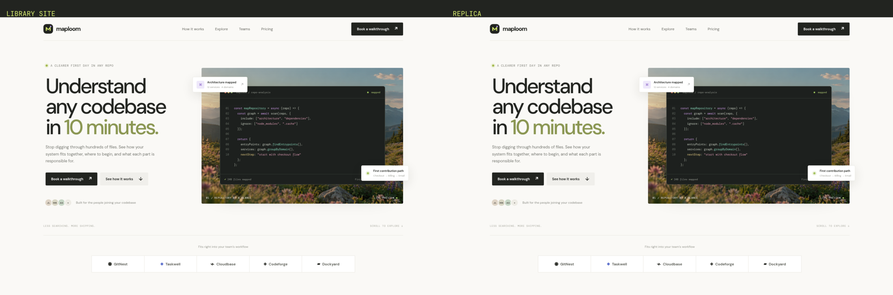
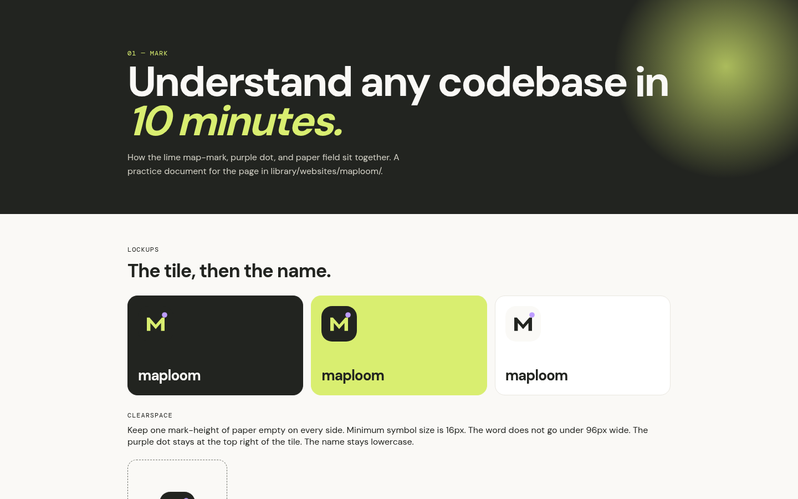
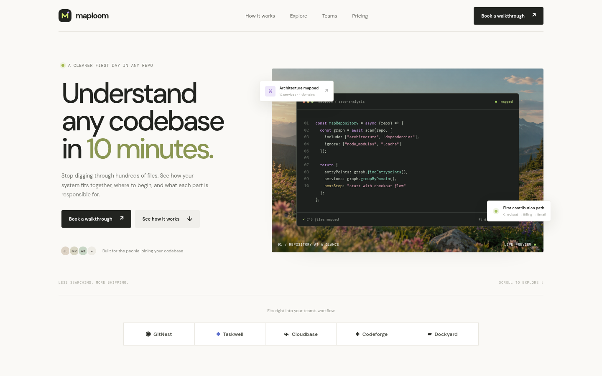
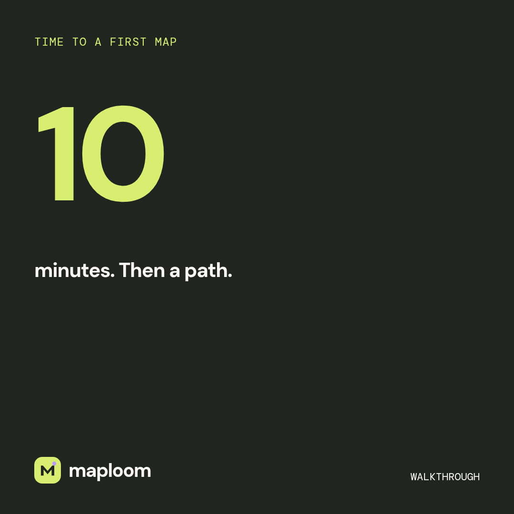
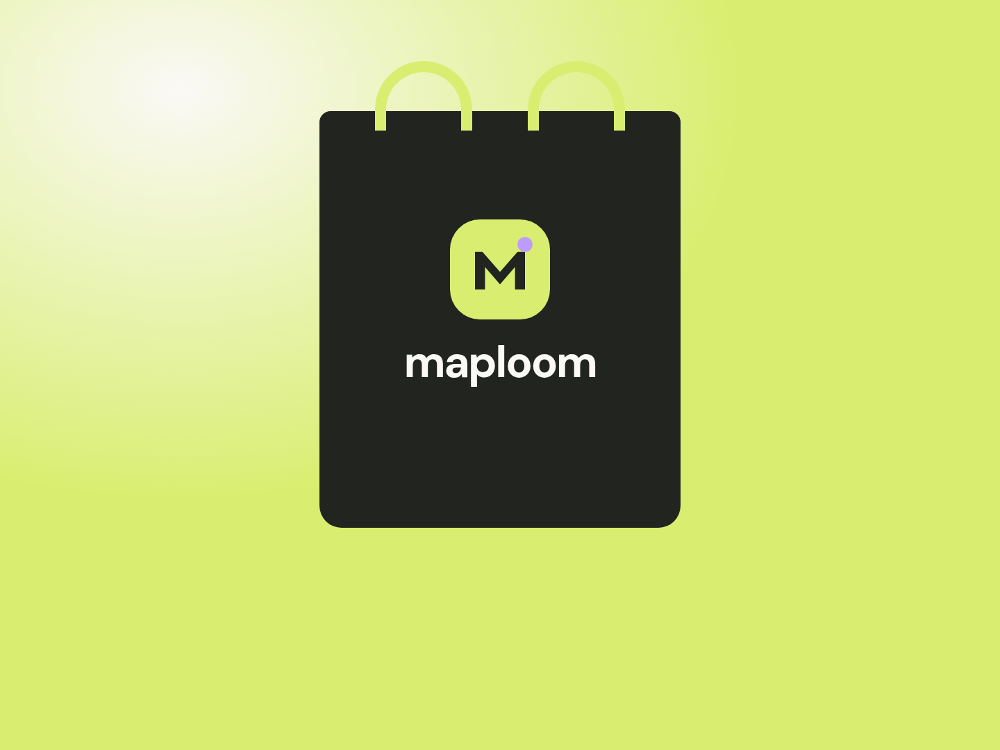
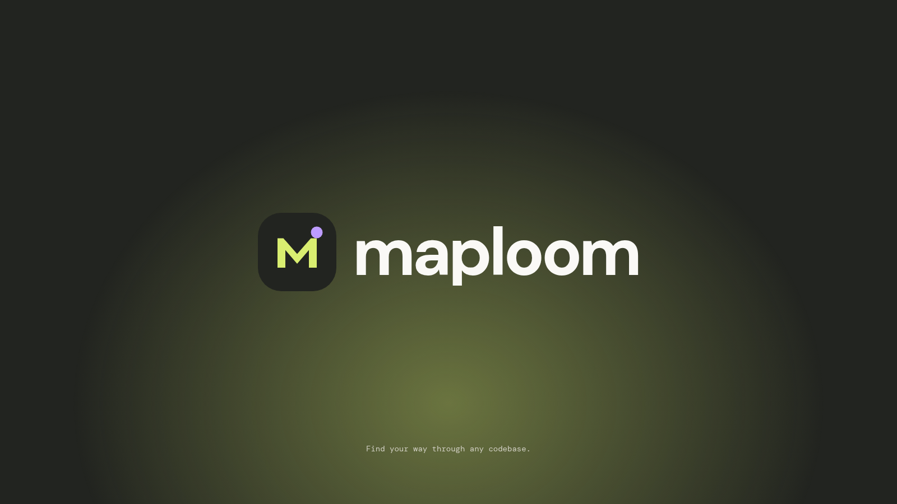

maploom
Maploom identity:
study & extensions
A practice study of the Maploom page already in this library (library/websites/maploom/). The replica keeps that page. The extended system redraws the lime map-mark and applies it to guidelines, the landing, social, merch, and a logo reveal. For practice only.
A — Replica
 Site replicaRepo map · first path · 10 minutes
Site replicaRepo map · first path · 10 minutes


Library site vs replicaside-by-side compare.pngB — Extended system

Brand guidelinesclearspace · min size · tokens + WCAG · type · do/don't
Website landingeditorial onboarding · reduced-motion · responsive
Social kit3 posts 1080² · story 1080×1920
Merch & stationeryletterhead · email signature · tote · tees · ID badge
Logo revealGSAP timeline · webm in exports/